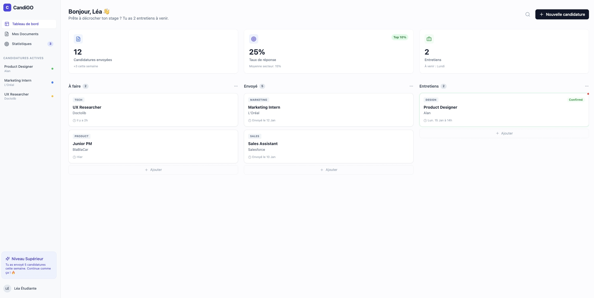

client:
Personal Project
role:
Full-Stack Dev, Product Design
year:
2025
CandiGO
AI job application
platform
CandiGO is an AI-powered job application platform that transforms the
exhausting, time-consuming process of tailoring CVs and cover letters into a streamlined, intelligent
workflow. Built for French students and young professionals searching for stages, alternances, and
entry-level positions.

The Problem
Job seekers can spend up to 1 hour per application manually adapting CVs and cover
letters. ATS systems filter out 75%+ of applications before human review, often rejecting visually creative
CVs like Canva templates.
The Solution
CandiGO automates the entire application workflow with a browser extension for
one-click job posting imports. The AI intelligently selects relevant competencies, experiences, and
formations, matching them to job posting keywords to generate ATS-optimized, personalized CVs and cover
letters in under 10 minutes.
Up to 83% time reduction: From 1 hour to 10 minutes per application.
Up to 83% time reduction: From 1 hour to 10 minutes per application.